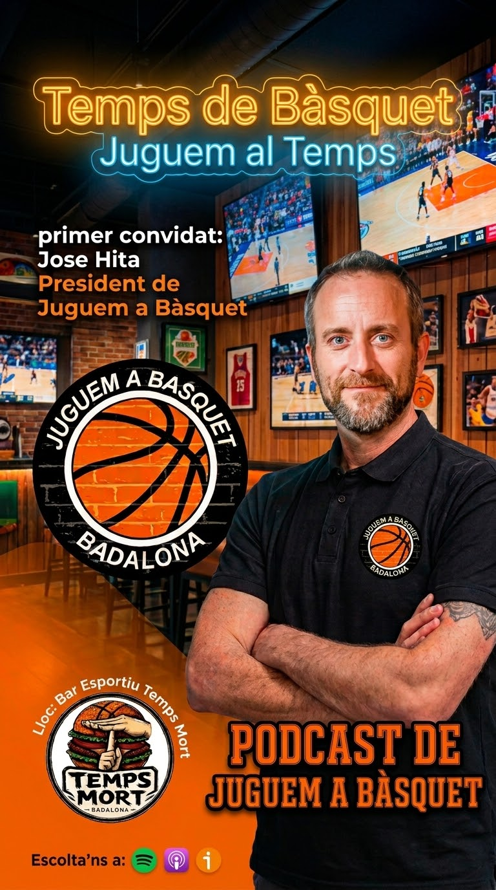
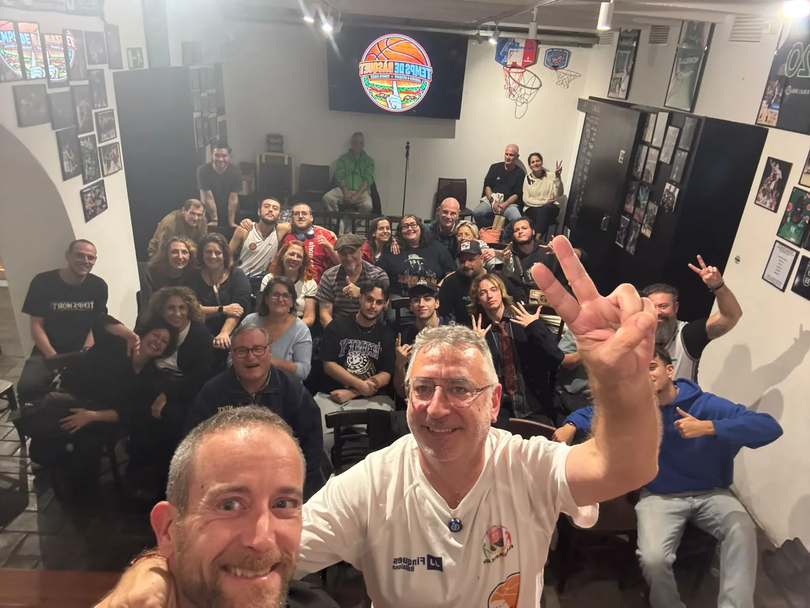
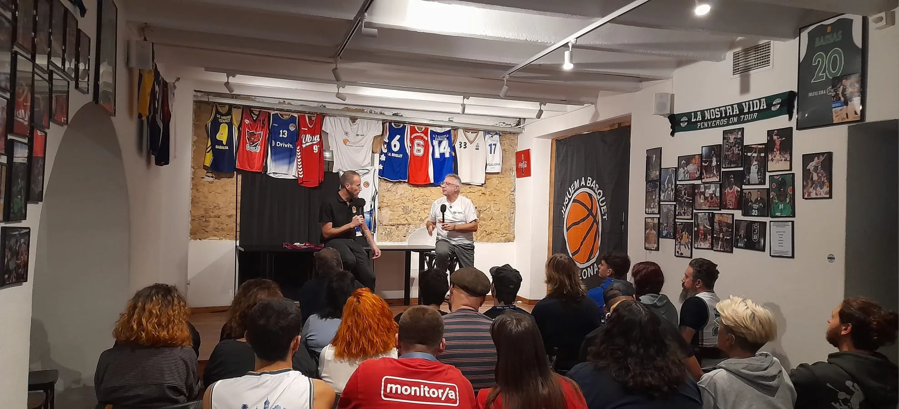
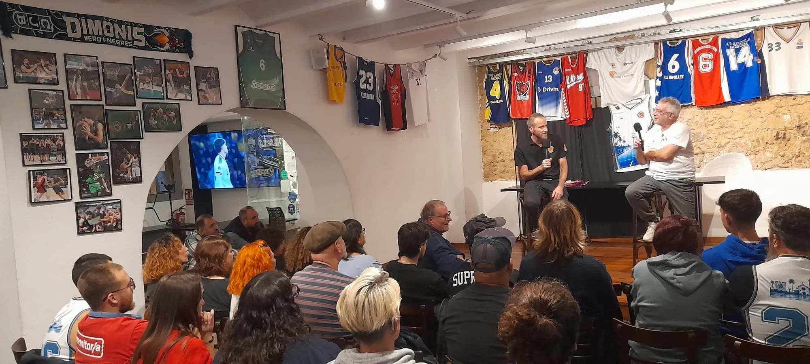
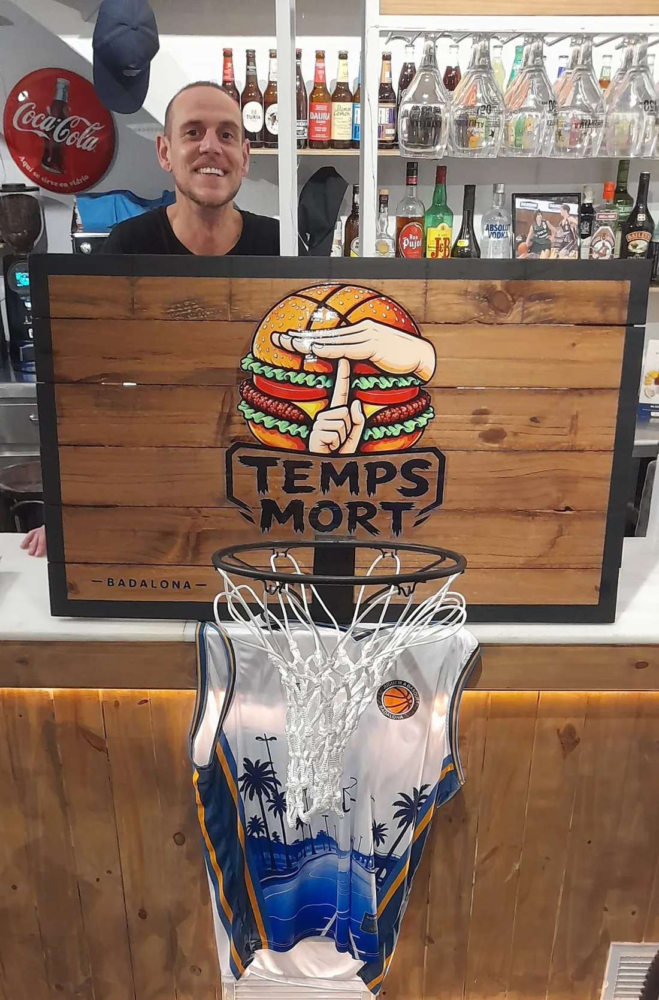

AmpliaCelebrada
Episodi 1
Pòdcast «Juguem al Temps» · Jose Hita
Escolta l'episodi
Molt aviat a Spotify i YouTube.

AmpliaPòdcast «Juguem al Temps» · Jose Hita
Molt aviat a Spotify i YouTube.
El 12 de novembre vam gravar en directe el primer episodi de «Temps de Bàsquet · Juguem al Temps» al Bar Esportiu Temps Mort de Badalona, envoltats de samarretes històriques i amb la sala plena de gent.
El primer convidat va ser Jose Hita, president de Juguem a Bàsquet. Gràcies a tothom que va venir a escoltar-lo i a compartir una estona de bàsquet i conversa; vam acabar amb una foto de grup amb tota la sala. Aviat podreu escoltar l'episodi a Spotify i YouTube.



